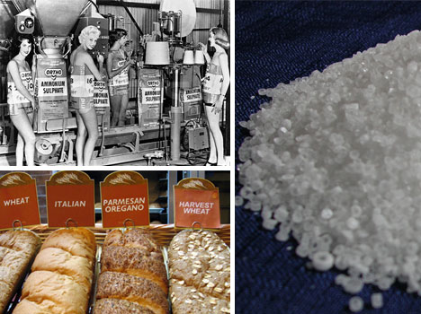
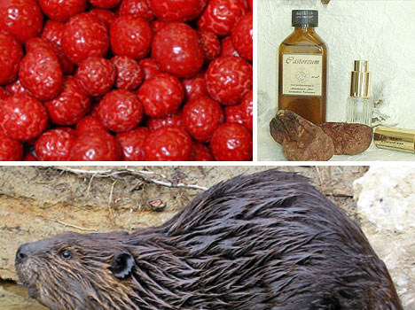
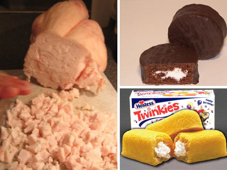
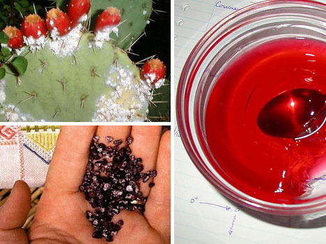
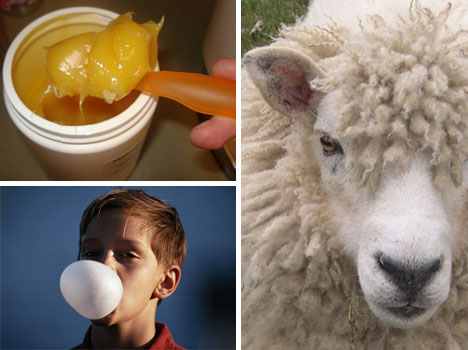
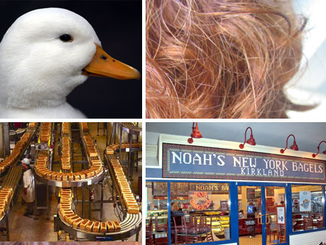
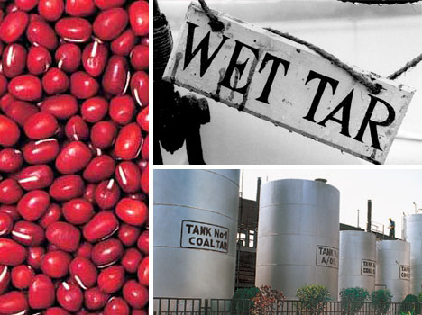
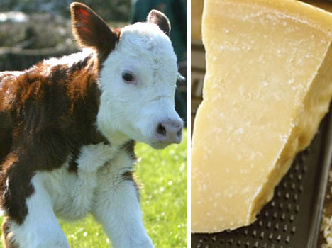

Top 10 Gross Ingredients
Everyone now realizes that processed and fast foods provide no nutritional value and are actually very harmful to our bodies. But that shouldn’t make these ingredients found inside them any less disturbing. This list sends a clear message: when a packaged food contains more than five ingredients and includes some that are difficult to pronounce, stay away! Instead stick with raw and organic fruits, vegetables, and meats. Now brace yourself for this list.
1. Fertilizer in Subway Sandwich Rolls

While chemical fertilizers inevitably make it into our produce in trace amounts, you would not expect it to be a common food additive. However, ammonium sulfate can be found inside many brands of bread, including Subway’s. The chemical provides nitrogen for the yeast, creating a more consistent product.
2. Beaver Anal Glands in Raspberry Candy

The anal glands of a beaver, conveniently euphemized as castoreum, are a common ingredient in perfumes and colognes but are also sometimes used to — believe it or not — enhance the flavor of raspberry candies and sweets.
3. Beef Fat in All Hostess Products

While this may not bother meat eaters, others are shocked to discover that their favorite childhood treats contain straight-up beef fat. This ingredient may be included in a list of other oils that may or may not be used, so it is always a gamble!
4. Crushed Bugs as Red Food Coloring

After killing thousands at a time, the dried insects are boiled to produce a liquid solution that can be turned to a dye using a variety of treatments. Some people worry that the coloring — often called carmine or carminic acid — could be listed as a “natural color,” disguising the fact that there are bugs in the product. This is also seen largely in commercial make-up products.
5. Beetle Juice in Sprinkles and Candies

You know that shiny coating on candies like Skittles? Or the sprinkles on cupcakes and ice cream sundaes? Well, they get that glaze from the secretions of the female lac beetle. The substance is also known as shellac and commonly used as a wood varnish.
6. Sheep Secretions in Bubble Gum

The oils inside sheep’s wool are collected to create the goopy substance called lanolin. From there, it ends up in chewing gum (sometimes under the guise of “gum base”), but also is used to create vitamin D3 supplements.
7. Human Hair and/or Duck Feathers in Bread

What’s in your morning bagel? If you get it from Noah’s Bagels in New York, it contains either human hair or duck feathers, and it’s your guess as to which. The substance, called L-cysteine or cystine, is used as a dough conditioner to produce a specific consistency. While artificial cysteine is available, it is cost prohibitive and mostly used to create kosher and halal products.
8. Coal Tar in Red-Colored Candy

Coal tar is listed as number 199 on the United Nations list of “dangerous goods,” but that doesn’t stop people from using it in food. The coloring Allura Red AC is derived from coal tar and is commonly found in red-colored candies, sodas and other sweets.
9. Calf Stomach in Many Cheeses

In the UK, all cheeses are labeled as either suitable or not suitable for vegetarians because in Britain (and everywhere else) many cheeses are made using rennet, which is the fourth stomach of a young cow. In the United States and most other countries, people are left to guess about the stomach-content of their cheese.
10. Sand in Wendy’s Chili
Sand is hidden in Wendy’s chili as a name you might remember from high school chemistry class: silicon dioxide. Apparently they use sand as an “anti-caking agent,” perhaps to make sure the chili can last for days and days over a heater.
Wisdom-Square › Food Contamination › Top 10 Gross Ingredients